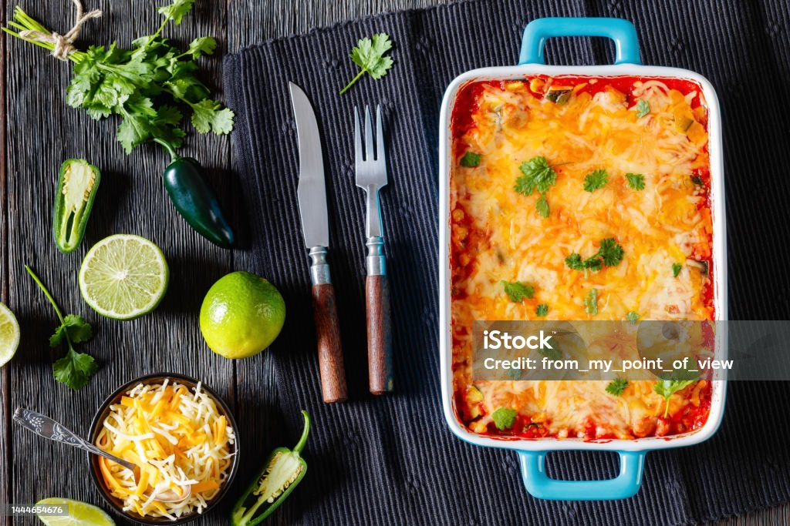

Best Taco Casserole

Description
This taco casserole with ground beef and tortilla chips is easy to make and very tasty. I
often substitute with ground turkey and low-fat dairy products, and it's still delicious!
Serve this casserole with chips, salsa, and green salad.
Prep time is 10 minutes
Cook time is 1 hour
Servings is 6
Ingredients
- 1 pound lean ground beef
- 2 cups of salsa
- 1 (16 ounce) can chili beans, drained
- 3 cups tortilla chips, crushed
- 2 cups sour cream
- 1 (2 ounce) can sliced black olives, drained
- ½ cup chopped green onion
- ½ cup chopped fresh tomato
- 2 cups shredded Cheddar cheese
Steps
- Gather all ingredients
- Preheat the oven to 350 degrees F (175 degrees C). Spray a 9x13-baking dish
withooking spray.
- Heat a large skillet over medium-high heat. Cook and stir ground beef in the hot
skillet until browned and crumbly, 8 to 10 minutes.
- Stir in salsa, reduce heat, and simmer until liquid is absorbed, about 20 minutes
Stir in beans; cook until heated through.
- Spread crushed tortilla chips over the bottom of the baking dish; spoon beef
mixture on top. Spread sour cream over beef, then sprinkle olives, green onions,
and tomatoes on top. Cover with Cheddar cheese.
- Bake in the preheated oven until hot and bubbly, about 30 minutes.
- Serve and Enjoy!
Home Page